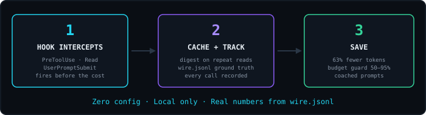
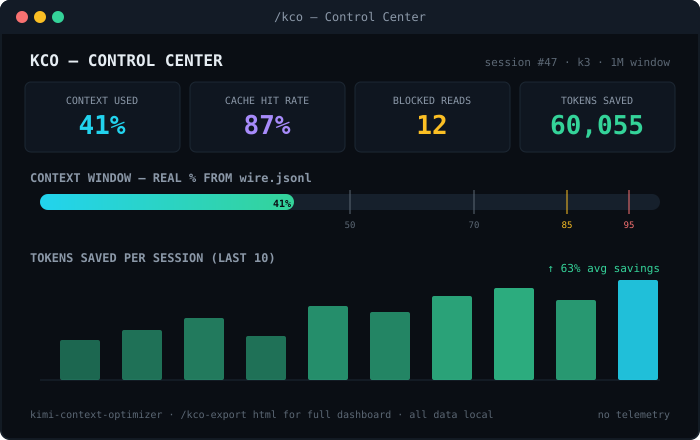

KCO hooks into Kimi Code CLI to block redundant reads, guard your real context budget straight from the wire transcript, and coach weak prompts — before they cost you.
/plugins install https://github.com/<you>/kimi-context-optimizer
The problem
In a typical agentic session, 30–40% of context is waste. Every turn resends the whole conversation — so unread, duplicated, and useless bytes are taxed on every single step.
of a typical session's context is waste: files read twice, lockfiles opened in full, dead-end exploration.
slurped to change one function. The model needed 50 — you paid for all of them, on every subsequent turn.
the entire context goes back over the wire. Waste doesn't cost once — it compounds until you compact.
once in tokens, once in quality: useful context gets crowded out and the model loses the plot.
How it works
KCO registers hooks in the Kimi Code lifecycle. They fire before the cost is incurred — not after.

Features
Automatic from the moment you install. Each one exists to stop a specific way sessions waste context.
A second full read of the same file gets blocked and replaced with a compact structural file map — landmarks and line numbers, not 3,900 tokens again.
Every tool call, file touch, and token figure is recorded per session, so reports, digests, and per-task costs are real — not vibes.
Live real context % read from wire.jsonl ground truth. Warns at 50/70/85/95%,
nudges /compact at 90%, warns about context rot near ~350K on 1M windows.
Grades every prompt S–F (English + Russian) before it runs and suggests the fix — so tasks land on the first try instead of the fourth.
Warns before you read files that were waste in 3+ past sessions, and turns chronic
waste into permanent .contextignore rules.
PostToolUseFailure events counted as wasted turns; SubagentStart/Stop attributing what delegated work actually costs.

Why the Kimi version is better
KCO is a port of claude-context-optimizer — but the Kimi Code surface exposes ground truth the Claude version could only estimate.
| Claude version | KCO (Kimi Code) | |
|---|---|---|
| Context size | Estimated from tool payloads | Real per-step token count from wire.jsonl; estimates only as self-calibrating fallback |
| Cache economics | Anthropic pricing math, modeled | Measured inputCacheRead / inputCacheCreation per step — hit rate and cache breaks, not guesses |
| Failed tool calls | No failure events | PostToolUseFailure tracked as wasted turns on the dashboard |
| Sub-agents | PPID guessing | SubagentStart/Stop events attribute delegation cost precisely |
| Context window | Hardcoded 200K assumption | Read from your config.toml model — 256K on K2.7, 1M on K3 — plus a context-rot warning at ~350K |
| Metrics | Dollar-first billing math | Tokens + % of your window first; $ only if you configure real prices — subscription-honest |
| Memory file | — | AGENTS.md analysis for token bloat, with concrete trims |
Commands
Thin wrappers over the hook data — every number comes from what your sessions actually did.
/kcoControl Center — budget, savings, waste, prompt grade, next actions/kco-reportFull token ROI report across all sessions + file suggestions/kco-roiMonthly savings projection — tokens-first, $ if priced/kco-digestEfficiency digest with S–F grade and trends/kco-exportExport the report as Markdown or an HTML dashboard/kco-cleanDelete old tracking data / reset stats/kco-doctorHealth check: versions, hooks, data dir, config, Node/kco-replaySummaries of your last N sessions for quick context recovery/kco-taskPer-task token attribution — see what each task cost/kco-packBuild a minimal, ranked context pack (files + offset/limit) for a task/kco-templatesSave and re-apply named context sets for recurring tasks/kco-gitSuggest files to read from current git state + history/kco-anatomyOne-file project map: every file with size, tokens, category/kco-shieldWaste-protection status; grow .contextignore from real waste/kco-agentsmdAudit AGENTS.md for token bloat, get concrete trims/kco-coachGrade a prompt (or recent ones) and offer a rewrite/kco-overheadAudit fixed per-session overhead from the real wire transcript/kco-smart-loaderAuto-suggests files to preload when you describe a new task/kco-budgetSet budget limits, auto-compact, optional pricing; window-awareInstall
Requires Node.js ≥ 18 on your PATH. No accounts, no API keys, no config to get started.
From Kimi Code CLI, point at a local path or a git URL.
/plugins install https://github.com/<you>/kimi-context-optimizerHooks and skills register on reload. Updating later = reinstall + reload again.
/reloadChecks Node version, hook wiring, data dir, and config in one go.
/kco-doctor